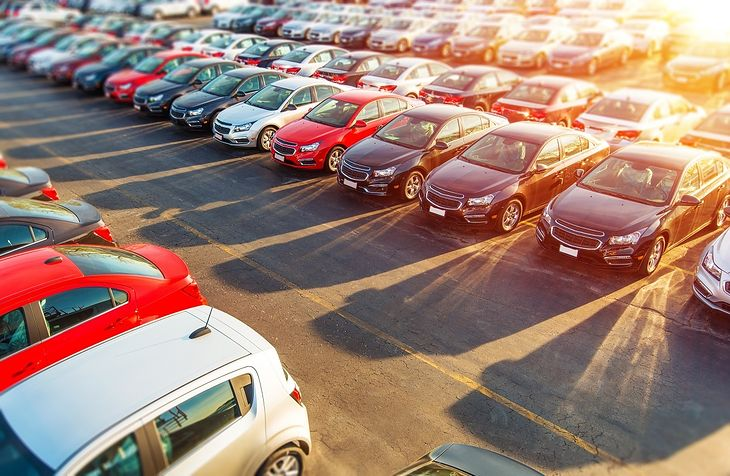
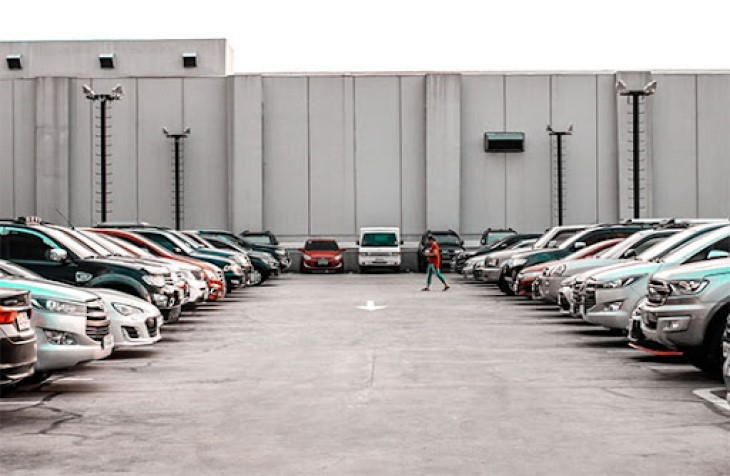
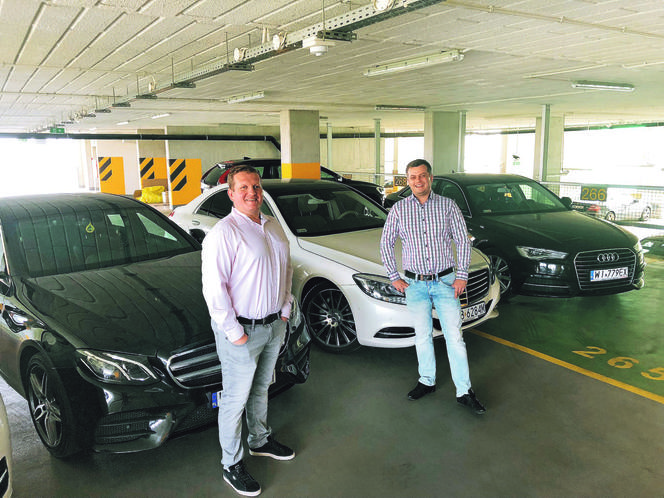
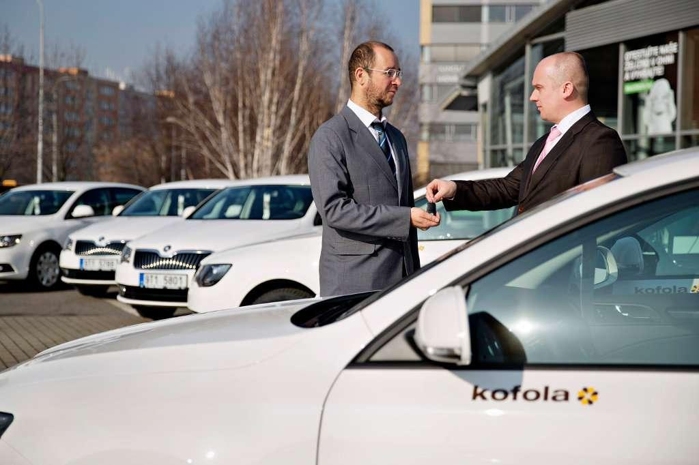
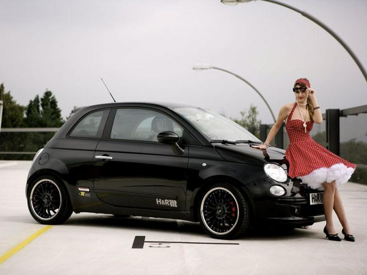

Zapraszamy do zapoznania się ze stroną naszej wypożyczalni samochodów, dzięki której możesz zarezerwować samochód w dowolnej klasie.
Wypożyczalnia samochodów AutoKS działa na terenie całej Polski oraz na wszystkich polskich lotniskach w miejscowościach takich jak: Warszawa, Wrocław, Kraków, Szczecin, Rzeszów, Poznań, Olsztyn, Łódź, Lublin, Katowice, Gdańsk, Bydgoszcz.
Poza Polską możesz wynająć u nas samochody również w Hiszpanii na lotnisku Alicante i Murcia oraz w Niemczech na Berlińskich lotniskach Tegel i Schonefeld.


Oferujemy wyłącznie nowe samochody, bez limitu kilometrów, zapewniające komfortową i bezpieczną podróż w każdych warunkach. Przed wydaniem samochodu nasza obsługa sprawdza 50 różnych punktów, dla twojego komfortu i bezpieczeństwa. Dlatego przed każdym wynajęciem masz pewność, że samochód jest przygotowywany do drogi.
W AutoKS możesz wynająć samochód w dowolnym okresie i zwrócić samochód w każdy obsługiwanym przez nas oddziale bez dodatkowych kosztów.

AutoKS to firma z ponad 90 letnim doświadczeniem, która świadczy usługi na najwyższym poziomie o czym świadczą opinie naszych klientów w internecie i mediach społecznościowych. Jeśli Twoim priorytetem jest obsługa klienta to właśnie Odkryłeś odpowiednią wypożyczalnie. Znajdziesz dla siebie samochody w każdej możliwej klasie. Spełniamy Twoje marzenia dając możliwość dotarcia do celu! Do zobaczenia w naszych oddziałach, sprawdź nas!
